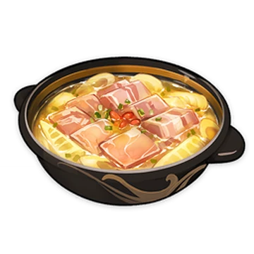

Zhongli's favorite dish -
Slow-Cooked Bamboo Shoot Soup

Description
The ham is a butt end selected according
to Yuehai Pavilion's gourmet standards. The fresh meat is pork
belly, freshly hunted in Springvale, while the bamboo shoots
are the densest you'll find in Qingce Village. It is then heated,
slowly, gently, and with the utmost care and technique... Such a
"particular" taste may only be shared with those who know how to
appreciate it.
Ingredients:
- Pork Belly Block - 900 g
- Cooking wine - 45 ml
- Salt - 55 g
- Sichuan pepper - 15 g
- Star anise - 1x
- Laurels - 3x
- Cinnamon stick - 0,5x
- Orange peel
- Spring onion
- Cloves of ginger - 6x
- Bamboo shoot - 1x
- Spareribs - 300 g
- Wolfberry
Steps
- Rub the cooking wine into the Pork Belly Block;
- Add salt, sichuan pepper, star anise, laurels, cinnamon stick and orange peel onto the frying pen;
- Fry the mix on low heat and add it to the Pork Belly Block;
- Leave it to marinate;
- Chop the onion, ginger and the bamboo shoot;
- Slice marinated Pork Belly Block;
- Boil the Belly Block and spareribs on medium heat, add ginger and cooking wine;
- Get the meat out and put the bamboo shoot into the water;
- Combine the meat, ginger, onion and bamboo shoot and let them boil a little more;
- Add chopped onion and wolfberry
And that's it!